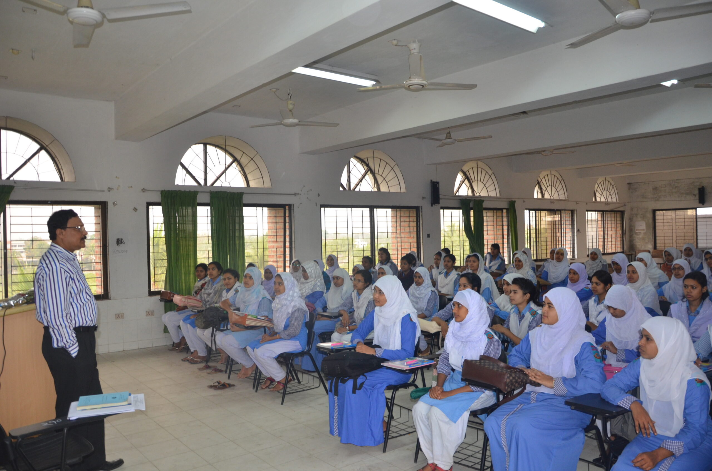

.png)

About Us
In 1998, the then government approved the 'Project for setting up three women's polytechnic institutes in the divisional towns'. Later in 2003, with the financial support of Islamic Development Bank (IDB), the work of this project started in the divisional cities of Chittagong, Khulna and Rajshahi. On September 13, 2006, the then Prime Minister inaugurated the Rajshahi Women's Polytechnic Institute. Mr. AKM Amir Hossain Sarkar, the then Principal of Rajshahi Polytechnic Institute served as the first Acting Principal of this institute. Later, Mr. Md. Omar Farooq is serving as the principal from June 1, 2006.
Educational Institution Rajshahi Built in 2003, this technical educational institute is located on Naodapara Bypass of the city (between Mango Chatwar and New Bus Terminal), eight kilometers north-east of Rajshahi city centre. This educational institution is built with 5 buildings (Administrative, Academic, Worksop-1, Worksop-2 and 150-seat Student Residence) on a total area of 2 acres.
4 years “Diploma-in-Engineering Course” :
At present 4 years diploma-in-engineering education program is being conducted in 5 technologies in this institution. The technologies are :
- Computer
- Architecture
- Electromedical
- Electrical
- Food
This four-year education course consists of a total of eight semesters including an “Industrial Attachment Training” of one semester of six months duration to be completed in various establishments. According to the rules of Bangladesh Technical Education Institute, after completing this course of eight semesters with industrial training, he is awarded the "Diploma-in-Engineering" certificate of a specific technology.

Teachers, Officers and Employees:
At present, a total of 150 teachers, officials and employees are engaged. All the teaching staff are dedicated, hardworking and dedicated in teaching as they have brilliant achievements in education. They are very sincere and caring in solving any problem related to the education of the students in the classroom as well as outside the classroom. Also students have excellent relationship with all the officers and employees working.
Hostels and staff accommodation:
On the east side of the main building of the institute there is a 4-storey student residence with 300 seats. Seats are allocated among the students considering their merit and the distance of the institute from their permanent address. Besides, there is no accommodation facility for teachers and officials in this institute. There is a 2-storey staff quarters of 4 units for employees. Besides, there is a 2-storey quarter for the Principal and Hostel Superintendent at the east-south corner of the institute.
Playground:
There is no separate playground in the institute. However, an open space of about 12,000 square feet between the four main buildings is being used as a playground. This ground has facilities for short range football, cricket along with volleyball, badminton and other outdoor games.

Libraries and IT Centres:
The institute has a library of up-to-date text and reference materials.
Texts and reference books along with current technology and educational support journals can be used by teachers, officers and staff including students. Around 50 people can sit and read here at a time. Currently the collection number of this library is about 4650. In 2023, Bangabandhu Corner (collection number around 500) was established here.
The institute has an IT center to keep up with the latest information technology and make the students proficient in information technology. The center is equipped with all modern communication technologies including internet and e-mail and has recently been connected with BTCL's fiber optic connection.
The institute has an Audio-Visual Lab with state-of-the-art Audio-Visual equipment. Multimedia Projector, Over Head Projector,
This lab with video camera, tape recorder, record player etc.
Higher Education Opportunities:
After passing the diploma, there is an opportunity to become an E. JHP engineer through the 2-year A. G. O. U. examination in addition to the opportunity to study E. JHP in related subjects in Dhaka University of Engineering and Technology and various private universities. One year Diploma in Technical Education course can be done in Technical Teacher Training College. Also Diploma Engineers can pursue degree in side courses under National University. Diploma engineers have plenty of opportunities for higher education outside the country.
Workplace:
After passing diploma-in-engineering there are opportunities to take up prestigious jobs or trades of choice. The academic recognition of the diploma course is external so a diploma engineer gets the opportunity to work abroad as a middle class engineer rather than a general labourer. There is an opportunity to join the service initially as 2nd Class Gazetted Officer and get promoted to 1st Class Gazetted Officer. At present Diploma Engineers in Bangladesh are employed in Water Development Board, Power Development Board, T&T, Television, Radio, Atomic Energy Commission, Meteorological Department, Technical subject teachers in Vocational Schools and Colleges and other jobs including teachers in various engineering educational institutions, City Corporations, Municipalities, Job opportunities have been created in various public and private institutions including Shipping Corporation, Biman, Bangladesh Road Transport Authority, modern public and private hospitals.